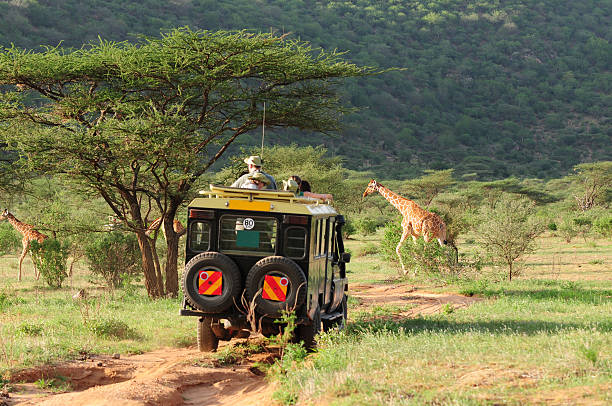
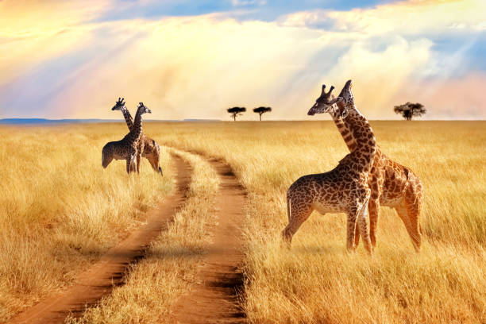
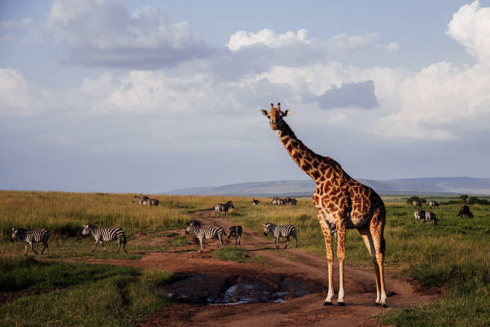
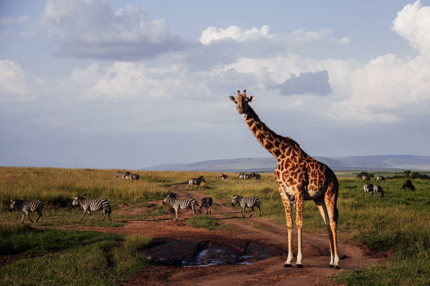
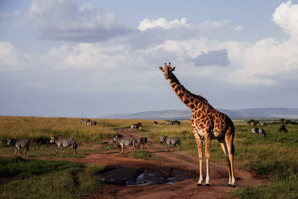
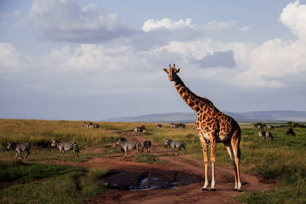

 



Explore the breathtaking destinations that await you. From serene beaches to majestic mountains, there's something for everyone.
Mount Kenya is the highest mountain in Kenya and the second-highest in Africa. It offers stunning scenery with its jagged peaks, glaciers, and diverse wildlife. It’s a great destination for trekkers and climbers.
Diani Beach is a beautiful white-sand beach located on the Indian Ocean coast, just south of Mombasa. It’s a perfect destination for relaxation, water sports, and experiencing the vibrant coastal culture
Lamu Island is part of the Lamu Archipelago and is known for its rich Swahili culture and architecture. It’s a UNESCO World Heritage Site with narrow streets, traditional houses, and a tranquil atmosphere.
Amboseli National Park is famous for its large elephant herds and stunning views of Mount Kilimanjaro. The park offers excellent opportunities for wildlife photography and game viewing.
Lake Nakuru National Park is renowned for its large flamingo population that feeds along the lake’s shores. It’s also home to diverse wildlife, including rhinos, lions, and leopards.
